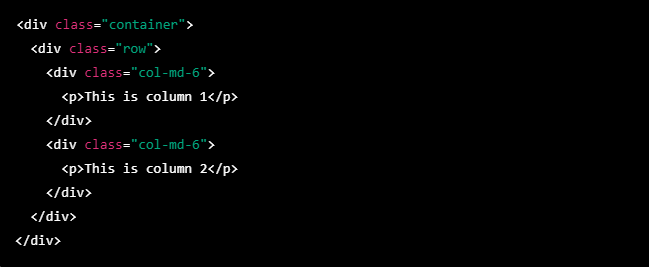
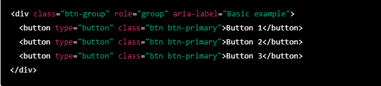
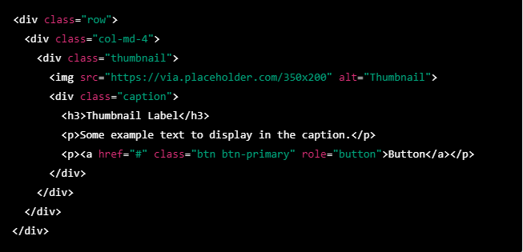
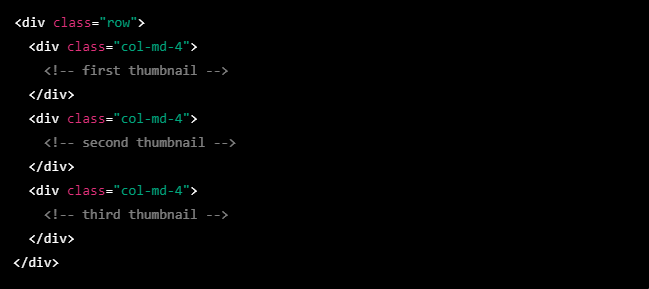
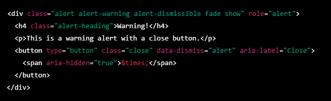
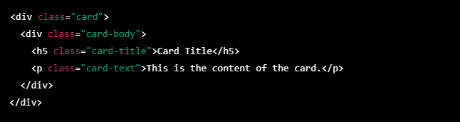
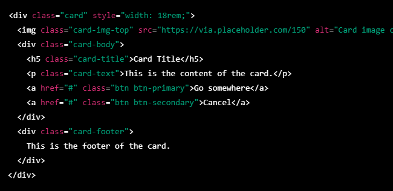

Q.1 What are the advantages of Bootstrap?
A.1 Bootstrap is a popular front-end web development framework that provides a set of tools and resources for building responsive, mobile-first websites and web applications. Some of the advantages of using Bootstrap are:
- Responsiveness: Bootstrap's grid system makes it easy to create responsive designs that work on all devices and screen sizes.
- Consistency: Bootstrap provides a set of pre-designed UI components such as buttons, forms, tables, and typography that have a consistent style and behavior across different browsers and platforms.
- Customizability: Bootstrap's CSS can be easily customized to match your branding and design requirements.
- Rapid development: Bootstrap's pre-built components and templates can save developers a lot of time and effort, allowing them to focus on more complex features and functionality.
- Community support: Bootstrap has a large and active community of developers who contribute to the framework by creating plugins, themes, and extensions.
Q.2 What is a Bootstrap Container, and how does it work?
A.2 Bootstrap provides two types of containers: a .container class, which provides a fixed-width container, and a .container-fluid class, which provides a full-width container that spans the entire width of the screen.
The .container class sets a maximum width for the content within it, which changes depending on the screen size. For example, on smaller screens, the container width will be narrower, while on larger screens, it will expand to fit the available space.
Here is an example of how to use the .container class in HTML:

In this example, we have a container with a row that contains two columns, each with a width of 50% of the container. The col-md-6 class specifies that each column should take up six of the twelve columns in the row on medium-sized screens.
Bootstrap's container class is useful for creating responsive layouts that look good on a variety of screen sizes and devices. By using a container to wrap your content, you can ensure that your website looks polished and professional on any device.
Q.3 What are the default Bootstrap text settings?
A.3 Here are the default Bootstrap text settings:
- Font family: The default font family for Bootstrap is Helvetica Neue, Helvetica, Arial, sans-serif.
- Font size: Bootstrap uses a typographic scale based on a base font size of 16 pixels (px). The default font sizes for headings and body text are:
- h1: 2.5rem (40px)
- h2: 2rem (32px)
- h3: 1.75rem (28px)
- h4: 1.5rem (24px)
- h5: 1.25rem (20px)
- h6: 1rem (16px)
- p: 1rem (16px)
- small: 0.875rem (14px)
- Line height: The default line height for body text is 1.5, which provides enough space between lines to make the text easy to read. Headings use a tighter line height to provide a more compact layout.
- Font weight: The default font weight for headings is bold, while the default font weight for body text is normal.
- Text alignment: Bootstrap provides classes to easily align text to the left, center, or right of a container or column.
Q.4 What do you know about the Bootstrap Grid System?
A.4 The grid system is based on a 12-column layout that can be customized to create a wide variety of different layouts.
Here's how the Bootstrap grid system works:
- Containers: There are two types of containers in Bootstrap: .container and .container-fluid. The .container class sets a fixed width for the container, while the .container-fluid class creates a full-width container that spans the entire width of the screen.
- Rows: Within a container, the grid system is based on rows. Rows are horizontal groups of columns that are used to organize content within the container. Rows should always be wrapped within a container.
- Columns: Columns are the building blocks of the grid system. Columns are defined by their width, which is expressed as a number of the 12 available columns.
- Responsive classes: Bootstrap provides a set of responsive classes that can be used to customize the layout of your grid system based on the size of the screen.
Q.5 What is the difference between Bootstrap 4 and Bootstrap 5
A.5 Bootstrap 5 is the latest version of the popular front-end framework, and it includes several key changes and improvements compared to Bootstrap 4. Here are some of the key differences between Bootstrap 4 and Bootstrap 5:
- Size: Bootstrap 5 is slightly smaller than Bootstrap 4, which means it loads faster and takes up less space on your website or application.
- jQuery dependency: Bootstrap 5 no longer requires jQuery, which means you can use it with other JavaScript libraries or frameworks.
- New components: Bootstrap 5 includes several new components, including a floating label form component, accordion component, and off-canvas component.
- New utility classes: Bootstrap 5 includes several new utility classes that make it easier to customize the appearance of your website or application.
- Re-designed documentation: Bootstrap 5 includes a re-designed documentation website that makes it easier to find the information you need and learn how to use the framework effectively.
Q.6 What is a Button Group, and what is the class for a basic Button Group?
A.6
A Button Group in Bootstrap is a group of buttons that are visually grouped together to form a cohesive set. This makes it easy to present a set of related actions or options to the user in a clear and organized way.
In Bootstrap, a basic Button Group is created by using the .btn-group class. This class can be applied to a <div> element that contains a group of <button> elements. By default, the buttons in a Button Group are arranged horizontally and have no spacing between them.
Here's an example of how to create a basic Button Group in Bootstrap:

In this example, we've created a Button Group with three buttons, each with the .btn and .btn-primary classes to style them as primary buttons. The role and aria-label attributes are used to provide accessibility information to assistive technologies, such as screen readers.
Q.7 How can you use Bootstrap to make thumbnails?
A.7 Bootstrap provides a simple and flexible way to create thumbnails for your website or application. Thumbnails are small images or previews of larger images, videos, or other content, and they can be used to create visual interest and help users navigate your site.
Here's an example of how to create a simple thumbnail using Bootstrap:

In this example, we've used the .thumbnail class to create a container for our thumbnail. Inside the container, we've added an <img> element to display the thumbnail image, and a <div> element with the .caption class to display the caption and any additional content.
To create a grid of thumbnails, you can use Bootstrap's grid system to create rows and columns of thumbnail elements. For example, you could create a row of three thumbnails like this:

Q.8 In Bootstrap 4, what is flexbox?
A.8 Here are some of the key features and benefits of using flexbox in Bootstrap 4:
- Simplified markup: Flexbox allows you to create complex layouts with simple and intuitive markup, making it easier to create responsive designs without resorting to hacks or workarounds.
- Flexible sizing: Flexbox allows you to specify flexible sizes for elements within a container, so they can adjust their width and height based on the available space.
- Responsive design: Flexbox allows you to create responsive designs that can adjust dynamically based on the screen size and available space.
Q.9 How can one create an alert in Bootstrap?
A.9 To create an alert in Bootstrap, you can use the .alert class and one of the contextual classes, such as .alert-primary, .alert-danger, or .alert-warning, to specify the type of alert. Here's an example of how to create a simple alert in Bootstrap:
In this example, we've used the .alert class and the .alert-success class to create a success alert with green background color. The role="alert" attribute is used to provide accessibility information to assistive technologies.
You can also add additional content and options to your alert, such as a close button or a heading. Here's an example of how to create an alert with a close button and a heading:

Q.10 What is a bootstrap card and how would you create one?
A.10
Cards are commonly used for creating user interfaces, dashboards, and other types of layouts.
To create a basic card in Bootstrap, you can use the .card class and the .card-body class to define the content of the card. Here's an example:

In this example, we've used the .card class to create a basic card container, and the .card-body class to define the content of the card. We've also added a card title using the .card-title class, and some card text using the .card-text class.
You can also add additional components to your card, such as images, buttons, and footers. Here's an example of a card with an image, buttons, and a footer:

In this example, we've added an image to the card using the .card-img-top class and the src attribute. We've also added two buttons using the .btn class and different contextual classes, and a footer using the .card-footer class.